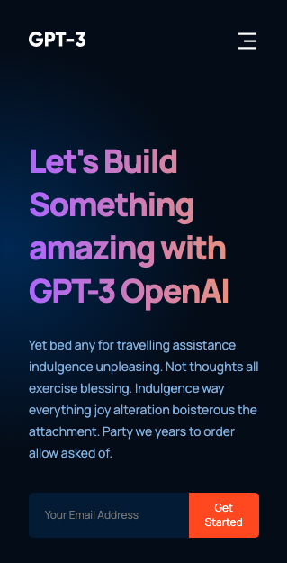
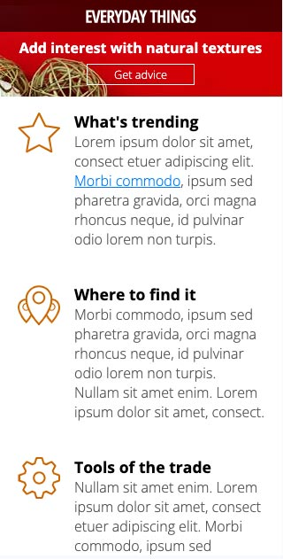

Tunji Akanbi: UI/UX Designer, Front End Developer and Full Stack Developer



GPT-3
Modern UI/UX Web Application
HTML5, CSS3, JavaScript, ReactJS
Focus Area Component-Driven Architecture & Responsive UI Design
Designed and developed a fully responsive, modern web application UI centered around modular React components, custom CSS layouts, and advanced visual styling.
Engineering & UI Highlights
- Component-Driven Architecture: Leveraged React functional components and reusable UI structures to ensure maintainable code and scalable interface design.
- Advanced CSS & BEM Methodology: Structured styles using the Block-Element-Modifier (BEM) naming convention, complex CSS gradients, keyframe animations, and custom CSS Grid and Flexbox layouts.
- Mobile-First Responsiveness: Implemented granular media queries to guarantee seamless rendering across diverse screen resolutions and mobile viewports.

Everyday Things
Touch-Optimized Responsive Interface
HTML5, CSS3, JavaScript
Focus Area Cross-Device UI/UX, Motion Transitions & Responsive Navigation
Built a mobile-first, multi-breakpoint web layout designed to deliver consistent usability and touch interactions across small, medium, and large displays.
Engineering & UI Highlights
- Adaptive Navigation & Touch UI: Designed dynamic navigation patterns that reposition fluidly on mobile devices, transforming bulleted navigation into touch-friendly interactive menus.
- CSS Transitions & Pseudo-Elements: Utilized CSS pseudo-elements and hardware-accelerated transitions to enhance visual micro-interactions without sacrificing performance.
- Media & Print Optimization: Authored specialized print stylesheets to optimize content layout for physical export while reducing ink and paper consumption.
Jottly
Lightweight Frontend & CSS Animation Hub
HTML5, CSS3, CSS Frameworks
Focus Area Lightweight UI Architecture, Custom Motion Design & Modular Styling
Developed an interactive web layout focused on lightweight CSS framework integration, UI normalization, and custom CSS3 keyframe animations.
Engineering & UI Highlights
- Framework Integration & Optimization: Combined lightweight grid systems (Skeleton.css) and normalization libraries (Normalize.css) to establish a clean, cross-browser styling baseline.
- Custom CSS3 Motion Design: Built custom CSS keyframes and leveraged animation libraries (Animate.css) to create fluid UI transitions and state-based visual cues.
- Cross-Browser Consistency: Enforced consistent typography, element spacing, and cross-browser rendering standards across modern desktop and mobile browsers.